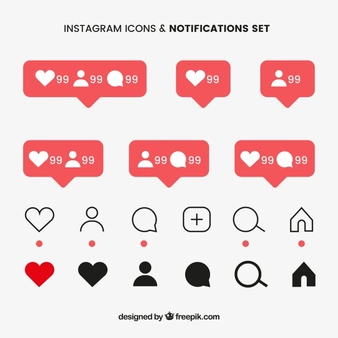
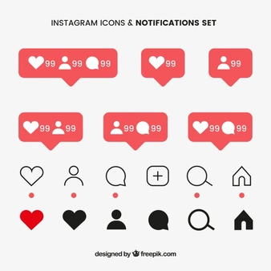

Qu'est ce que c'est Instagram ? Et à quoi ca sert ?
Instagram est un service gratuit de réseautage social construit autour du partage de photos et de vidéos. Il a été lancé en octobre 2010 sur iOS pour la première fois et est devenu disponible sur Android en avril 2012.
Vous vous demandez peut-être à quoi ça sert d’utiliser Instagram quand il y a tant d’autres réseaux sociaux autour de vous. Le principal atout d’Instagram est qu’il est basé sur des photos, qui sont super faciles à prendre avec un smartphone. Vous n’avez pas besoin de transporter un appareil photo pour partager le monde qui vous entoure, il vous suffit de prendre une photo, d’appliquer un filtre et vous êtes prêt à commencer.
 
